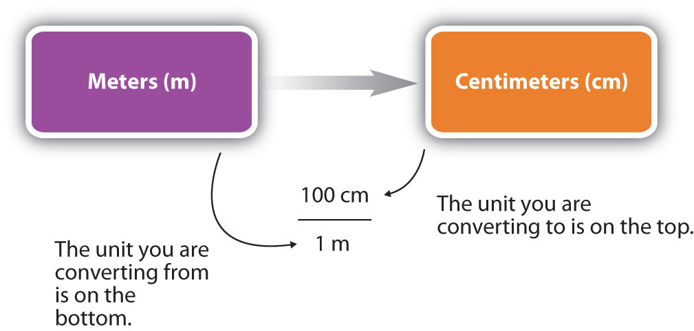

The ability to convert from one unit to another is an important skill. For example, a nurse with 50 mg aspirin tablets who must administer 0.2 g of aspirin to a patient needs to know that 0.2 g equals 200 mg, so 4 tablets are needed. Fortunately, there is a simple way to convert from one unit to another.
If you learned the SI units and prefixes described in Section 1.6 "The International System of Units", then you know that 1 cm is 1/100th of a meter.
or 100 cm = 1 mSuppose we divide both sides of the equation by 1 m (both the number and the unit):
As long as we perform the same operation on both sides of the equals sign, the expression remains an equality. Look at the right side of the equation; it now has the same quantity in the numerator (the top) as it has in the denominator (the bottom). Any fraction that has the same quantity in the numerator and the denominator has a value of 1:
We know that 100 cm is 1 m, so we have the same quantity on the top and the bottom of our fraction, although it is expressed in different units. A fraction that has equivalent quantities in the numerator and the denominator but expressed in different units is called a conversion factorA fraction that has equivalent quantities in the numerator and the denominator but expressed in different units..
Here is a simple example. How many centimeters are there in 3.55 m? Perhaps you can determine the answer in your head. If there are 100 cm in every meter, then 3.55 m equals 355 cm. To solve the problem more formally with a conversion factor, we first write the quantity we are given, 3.55 m. Then we multiply this quantity by a conversion factor, which is the same as multiplying it by 1. We can write 1 as and multiply:
The 3.55 m can be thought of as a fraction with a 1 in the denominator. Because m, the abbreviation for meters, occurs in both the numerator and the denominator of our expression, they cancel out:
The final step is to perform the calculation that remains once the units have been canceled:
In the final answer, we omit the 1 in the denominator. Thus, by a more formal procedure, we find that 3.55 m equals 355 cm. A generalized description of this process is as follows:
quantity (in old units) × conversion factor = quantity (in new units)You may be wondering why we use a seemingly complicated procedure for a straightforward conversion. In later studies, the conversion problems you will encounter will not always be so simple. If you can master the technique of applying conversion factors, you will be able to solve a large variety of problems.
In the previous example, we used the fraction as a conversion factor. Does the conversion factor also equal 1? Yes, it does; it has the same quantity in the numerator as in the denominator (except that they are expressed in different units). Why did we not use that conversion factor? If we had used the second conversion factor, the original unit would not have canceled, and the result would have been meaningless. Here is what we would have gotten:
For the answer to be meaningful, we have to construct the conversion factor in a form that causes the original unit to cancel out. Figure 1.10 "A Concept Map for Conversions" shows a concept map for constructing a proper conversion. The steps for doing a unit conversion problem are summarized in the margin.
Figure 1.10 A Concept Map for Conversions
This is how you construct a conversion factor to convert from one unit to another.
How do conversion factors affect the determination of significant figures? Numbers in conversion factors based on prefix changes, such as kilograms to grams, are not considered in the determination of significant figures in a calculation because the numbers in such conversion factors are exact. Exact numbersA number that is defined or counted. are defined or counted numbers, not measured numbers, and can be considered as having an infinite number of significant figures. (In other words, 1 kg is exactly 1,000 g, by the definition of kilo-.) Counted numbers are also exact. If there are 16 students in a classroom, the number 16 is exact. In contrast, conversion factors that come from measurements (such as density, as we will see shortly) or are approximations have a limited number of significant figures and should be considered in determining the significant figures of the final answer.
Solution
We start with what we are given, 4.7 L. We want to change the unit from liters to milliliters. There are 1,000 mL in 1 L. From this relationship, we can construct two conversion factors:
We use the conversion factor that will cancel out the original unit, liters, and introduce the unit we are converting to, which is milliliters. The conversion factor that does this is the one on the right.
Because the numbers in the conversion factor are exact, we do not consider them when determining the number of significant figures in the final answer. Thus, we report two significant figures in the final answer.
We can construct two conversion factors from the relationships between milliseconds and seconds:
To convert 18 ms to seconds, we choose the conversion factor that will cancel out milliseconds and introduce seconds. The conversion factor on the right is the appropriate one. We set up the conversion as follows:
The conversion factor’s numerical values do not affect our determination of the number of significant figures in the final answer.
Perform each conversion.
101,000 ns to seconds
32.08 kg to grams
Conversion factors can also be constructed for converting between different kinds of units. For example, density can be used to convert between the mass and the volume of a substance. Consider mercury, which is a liquid at room temperature and has a density of 13.6 g/mL. The density tells us that 13.6 g of mercury have a volume of 1 mL. We can write that relationship as follows:
13.6 g mercury = 1 mL mercuryThis relationship can be used to construct two conversion factors:
Which one do we use? It depends, as usual, on the units we need to cancel and introduce. For example, suppose we want to know the mass of 16 mL of mercury. We would use the conversion factor that has milliliters on the bottom (so that the milliliter unit cancels) and grams on top so that our final answer has a unit of mass:
In the last step, we limit our final answer to two significant figures because the volume quantity has only two significant figures; the 1 in the volume unit is considered an exact number, so it does not affect the number of significant figures. The other conversion factor would be useful if we were given a mass and asked to find volume, as the following example illustrates.
Density can be used as a conversion factor between mass and volume.
A mercury thermometer for measuring a patient’s temperature contains 0.750 g of mercury. What is the volume of this mass of mercury?
Solution
Because we are starting with grams, we want to use the conversion factor that has grams in the denominator. The gram unit will cancel algebraically, and milliliters will be introduced in the numerator.
We have limited the final answer to three significant figures.
What is the volume of 100.0 g of air if its density is 1.3 g/L?
The densities of many components and products of the body have a bearing on our health.
Bones. Bone density is important because bone tissue of lower-than-normal density is mechanically weaker and susceptible to breaking. The density of bone is, in part, related to the amount of calcium in one’s diet; people who have a diet deficient in calcium, which is an important component of bones, tend to have weaker bones. Dietary supplements or adding dairy products to the diet seems to help strengthen bones. As a group, women experience a decrease in bone density as they age. It has been estimated that fully half of women over age 50 suffer from excessive bone loss, a condition known as osteoporosis. Exact bone densities vary within the body, but for a healthy 30-year-old female, it is about 0.95–1.05 g/cm3. Osteoporosis is diagnosed if the bone density is below 0.6–0.7 g/cm3.
Urine. The density of urine can be affected by a variety of medical conditions. Sufferers of diabetes insipidus produce an abnormally large volume of urine with a relatively low density. In another form of diabetes, called diabetes mellitus, there is excess glucose dissolved in the urine, so that the density of urine is abnormally high. The density of urine may also be abnormally high because of excess protein in the urine, which can be caused by congestive heart failure or certain renal (kidney) problems. Thus, a urine density test can provide clues to various kinds of health problems. The density of urine is commonly expressed as a specific gravity, which is a unitless quantity defined as . Normal values for the specific gravity of urine range from 1.002 to 1.028.
Body Fat. The overall density of the body is one indicator of a person’s total body fat. Fat is less dense than muscle and other tissues, so as it accumulates, the overall density of the body decreases. Measurements of a person’s weight and volume provide the overall body density, which can then be correlated to the percentage of body fat. (The body’s volume can be measured by immersion in a large tank of water. The amount of water displaced is equal to the volume of the body.)
Sometimes you will have to perform more than one conversion to obtain the desired unit. For example, suppose you want to convert 54.7 km into millimeters. You can either memorize the relationship between kilometers and millimeters, or you can do the conversion in steps. Most people prefer to convert in steps.
To do a stepwise conversion, we first convert the given amount to the base unit. In this example, the base unit is meters. We know that there are 1,000 m in 1 km:
Then we take the result (54,700 m) and convert it to millimeters, remembering that there are 1,000 mm for every 1 m:
We have expressed the final answer in scientific notation.
As a shortcut, both steps in the conversion can be combined into a single, multistep expression:
Either method—one step at a time or all the steps together—is acceptable. If you do all the steps together, the restriction for the proper number of significant figures should be done after the last step. As long as the math is performed correctly, you should get the same answer no matter which method you use.
Convert 58.2 ms to megaseconds in one multistep calculation.
Solution
First, convert the given unit to the base unit—in this case, seconds—and then convert seconds to the final unit, megaseconds:
Neither conversion factor affects the number of significant figures in the final answer.
Convert 43.007 ng to kilograms in one multistep calculation.
A pharmacist dispenses drugs that have been prescribed by a doctor. Although that may sound straightforward, pharmacists in the United States must hold a doctorate in pharmacy and be licensed by the state in which they work. Most pharmacy programs require four years of education in a specialty pharmacy school.
Pharmacists must know a lot of chemistry and biology so they can understand the effects that drugs (which are chemicals, after all) have on the body. Pharmacists can advise physicians on the selection, dosage, interactions, and side effects of drugs. They can also advise patients on the proper use of their medications, including when and how to take specific drugs properly. Pharmacists can be found in drugstores, hospitals, and other medical facilities.
Curiously, an outdated name for pharmacist is chemist, which was used when pharmacists formerly did a lot of drug preparation, or compounding. In modern times, pharmacists rarely compound their own drugs, but their knowledge of the sciences, including chemistry, helps them provide valuable services in support of everyone’s health.
How do you determine which quantity in a conversion factor goes in the denominator of the fraction?
State the guidelines for determining significant figures when using a conversion factor.
The unit you want to cancel from the numerator goes in the denominator of the conversion factor.
Exact numbers that appear in many conversion factors do not affect the number of significant figures; otherwise, the normal rules of multiplication and division for significant figures apply.
Give the two conversion factors you can construct using each pair of units.
Give the two conversion factors you can construct using each pair of units.
How many meters are in 56.2 km?
How many seconds are in 209.7 ms?
How many microliters are in 44.1 L?
How many megagrams are in 90.532 g?
Convert 109.6 kg into micrograms. Express your final answer in scientific notation.
Convert 3.8 × 105 mm into kilometers. Express your final answer in scientific notation.
Convert 3.009 × 10−5 ML into centiliters. Express your final answer in scientific notation.
Convert 99.04 dm into micrometers. Express your final answer in scientific notation.
The density of ethyl alcohol is 0.79 g/mL. What is the mass of 340 mL of ethyl alcohol?
The density of a certain fraction of crude oil is 1.209 g/mL. What is the mass of 13,500 mL of this fraction?
The density of ethyl alcohol is 0.79 g/mL. What is the volume of 340 g of ethyl alcohol?
The density of a certain component of crude oil is 1.209 g/mL. What is the volume of 13,500 g of this component?
Vitamin C tablets can come in 500 mg tablets. How many of these tablets are needed to obtain 10 g of vitamin C?
A tablet of penicillin contains 250 mg of the antibacterial drug. A prescription contains 44 tablets. What is the total mass of penicillin in the prescription?
5.62 × 104 m
4.41 × 107 µL
1.096 × 108 µg
3.009 × 103 cL
270 g
430 mL
20 tablets